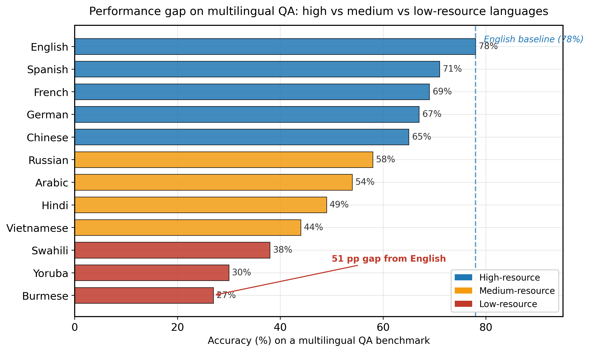

The first 80 percent of a multilingual model comes from data. The last 20 percent, the part that decides whether a Burmese teenager actually trusts your chatbot, comes from caring enough to evaluate it in Burmese.
Bert, Polyglot AI Agent
This section continues from Section 7.4, which covered multilingual pretraining objectives, the encoder lineage from mBERT to XLM-R, low-resource language challenges, and cultural bias. Here we turn from the descriptive (how multilingual models work and where they fail) to the prescriptive: how to measure multilingual capability rigorously, how to adapt a base model to a new target language with the three-stage pipeline (vocabulary extension, continued pretraining, cross-lingual instruction tuning), and which production-grade multilingual model families are worth shortlisting in 2026.
Prerequisites
This section continues from Section 7.4. Familiarity with the curse of multilinguality, tokenization fertility, and the cultural-bias discussion is assumed.
Open-weights models like Llama 3, Mixtral, and Qwen 2.5 caught up to closed frontier models so quickly that several Big Lab roadmaps quietly stopped trumpeting raw capability gains and started emphasizing safety, agents, and tools instead. The community sometimes calls this the 'Llama Effect': the day the open model gets within 5% of GPT-4 is the day the trillion-parameter race becomes a moat-defense exercise instead of a benchmark sprint.
7.4.4 Multilingual Evaluation Benchmarks
Evaluating multilingual LLMs requires benchmarks that span multiple languages and tasks. Several important benchmarks have emerged:
| Benchmark | Languages | Tasks | Key Feature |
|---|---|---|---|
| XTREME | 40 | Classification, QA, retrieval, structured prediction | Broad task coverage; includes low-resource languages |
| XTREME-R | 50 | Extended XTREME with retrieval tasks | Adds cross-lingual retrieval; harder evaluation |
| MEGA | 70+ | NLU, generation, reasoning | Specifically designed for generative LLMs |
| FLORES-200 | 200 | Machine translation | Covers 200 languages with professional translations |
| Belebele | 122 | Reading comprehension | Parallel QA across 122 languages; isolates language vs. knowledge |
| Global MMLU | 42 | Multitask knowledge | Culturally adapted MMLU; not just translated |

7.4.5 Adapting English-Centric Models to New Languages
Given the dominance of English in LLM training data, a practical question arises: how can we adapt an existing English-centric model to serve a new target language well? Several techniques have proven effective.
7.4.5.1 Vocabulary Extension
The first bottleneck is often the tokenizer. A tokenizer trained primarily on English will fragment text in other scripts into many small, semantically meaningless tokens. Vocabulary extension adds new tokens specific to the target language:
# Vocabulary extension for a new language
from transformers import AutoTokenizer, AutoModelForCausalLM
from tokenizers import trainers, Tokenizer, models
# Load base English-centric model
base_tokenizer = AutoTokenizer.from_pretrained("meta-llama/Meta-Llama-3-8B")
base_model = AutoModelForCausalLM.from_pretrained("meta-llama/Meta-Llama-3-8B")
# Train a new tokenizer on target language data (e.g., Hindi)
# target_corpus = load_dataset(...) # large Hindi text corpus
# new_vocab = train_new_vocab(target_corpus, vocab_size=20000)
# Identify tokens in new vocab not in base vocab
# to_add = [t for t in new_vocab if t not in base_tokenizer.vocab]
# base_tokenizer.add_tokens(to_add)
# Resize model embeddings to accommodate new tokens
# base_model.resize_token_embeddings(len(base_tokenizer))
# Initialize new embeddings (e.g., as mean of related existing embeddings)
# or with small random values7.4.5.2 Continued Pretraining
After vocabulary extension, the model needs exposure to text in the target language. Continued pretraining (also called domain-adaptive pretraining or language-adaptive pretraining) trains the model on a large corpus of target language text, with several considerations:
- Data mixing: Mix target language data (e.g., 70%) with English data (e.g., 30%) to prevent catastrophic forgetting of English capabilities
- Learning rate: Use a smaller learning rate than initial pretraining (typically 10x to 100x smaller) to avoid disrupting existing knowledge
- Duration: Continued pretraining typically lasts for 1B to 100B tokens, depending on the target language's distance from the base model's training data
- Evaluation: Monitor both target language performance and English performance throughout training to detect catastrophic forgetting early
Continued pretraining on a new language can rapidly degrade English performance if not carefully managed. The model essentially "forgets" English knowledge as it adapts to the new language. Mixing in English data and using conservative learning rates help, but some forgetting is often unavoidable. For applications requiring strong multilingual performance, consider using a model that was multilingual from the start, rather than adapting an English-centric model.
7.4.5.3 Cross-Lingual Instruction Tuning
After language-adaptive pretraining, the model understands the target language but may not follow instructions well in it. Cross-lingual instruction tuning fine-tunes the model on instruction-following examples in the target language. These can be:
- Translated: Machine-translate existing English instruction datasets (cheap but may introduce translation artifacts)
- Native: Collect instruction-response pairs written natively in the target language (expensive but higher quality)
- Mixed: Combine translated and native examples, with native examples for culturally sensitive topics
The full pipeline for language adaptation follows three stages: (1) vocabulary extension to improve tokenization efficiency, (2) continued pretraining on target language data to build language understanding, and (3) cross-lingual instruction tuning to enable instruction following. Each stage addresses a different aspect of the problem. Skipping vocabulary extension leads to high per-token costs; skipping continued pretraining leads to poor fluency; skipping instruction tuning leads to a model that understands the language but cannot follow user requests.
7.4.6 Multilingual Model Families
Several model families have been designed with multilingual capability as a core goal rather than an afterthought:
| Model | Languages | Strength | Approach |
|---|---|---|---|
| Qwen 2.5 | 29+ | CJK languages, English | Large-scale multilingual pretraining with balanced sampling |
| Aya (Cohere) | 101 | Broad coverage, instruction-tuned | Community-sourced multilingual instruction data from native speakers |
| BLOOM | 46+ | African and Southeast Asian languages | Deliberate inclusion of underrepresented languages in pretraining |
| Gemma 3 | 35+ | European and Asian languages | Curated multilingual data with quality filtering per language |
| Llama-3.1 | 8 | Major world languages | High quality on supported languages; limited coverage |
Cohere's Aya project is notable for its community-driven approach to multilingual AI. Rather than relying solely on web-scraped data or machine translation, Aya recruited native speakers from over 100 countries to create instruction-following examples in their own languages. This produces more natural, culturally appropriate training data than translation-based approaches. The resulting Aya 101 model covers more languages than any other open instruction-tuned model, though it remains smaller than frontier models in raw capability.
The Sapir-Whorf hypothesis in linguistics proposes that the structure of a language shapes the thoughts and perceptions of its speakers. LLMs provide an unexpected testing ground for this idea. When a model trained predominantly on English encounters questions about concepts that are linguistically encoded differently across languages (such as evidentiality in Turkish or absolute vs. relative spatial reference frames in Guugu Yimithirr), it defaults to English-encoded conceptualizations. This is not merely a bias problem; it suggests that the model's "worldview" is genuinely shaped by its training language distribution, much as Sapir and Whorf proposed for human cognition. The tokenization tax compounds this effect: languages that require more tokens per concept are literally given less computational attention per idea. Multilingual LLMs thus sit at the intersection of computational linguistics, philosophy of mind, and social justice, a combination that makes this one of the most consequential open problems in AI.
Culturally-aware language models. Beyond multilingual capability, recent work focuses on cultural alignment: ensuring models behave appropriately across cultural contexts, not just linguistic ones. CulturalBench (2024) evaluates models on culture-specific knowledge across 45 countries. Meanwhile, research on "conceptual blind spots" reveals that models often lack basic knowledge about non-Western cultural practices, historical events, and social norms. Community-driven initiatives like Aya 23 and the Masakhane collective continue to close the data gap for African and other underrepresented languages. The integration of culturally-aware evaluation with safety frameworks (Section 37.3) remains an active and important area of development.
- Multilingual benchmarks like XTREME, FLORES-200, Belebele, and Global MMLU enable systematic measurement of multilingual capabilities, revealing performance gaps of 40+ percentage points between high and low-resource languages.
- Language adaptation follows a three-stage pipeline: vocabulary extension (tokenization efficiency), continued pretraining (language understanding), and cross-lingual instruction tuning (instruction following). Each stage is necessary for a complete solution.
- Catastrophic forgetting is a real risk when adapting an English-centric model: conservative learning rates and English-data mixing reduce, but rarely eliminate, the loss of English capability.
- Community-driven initiatives like Aya and Masakhane demonstrate that high-quality multilingual AI requires engagement with native speaker communities, not just machine translation of English resources.
- Model family choice matters more than benchmark numbers. Qwen for CJK, Aya for broad coverage, BLOOM for African and Southeast Asian languages, Gemma for curated European/Asian quality, Llama for narrow but deep major-language coverage.
Show Answer
Show Answer
Exercises
The same paragraph in English tokenizes to 100 tokens with cl100k_base. Predict the token count for the same content in: (a) German; (b) Japanese (kanji-heavy); (c) Hindi (Devanagari script). What is the operational implication for non-English users?
Answer Sketch
(a) German: ~120-140 tokens. Long compound words split into more subwords than English. (b) Japanese: ~150-200 tokens. CJK characters often get one or two BPE tokens per character, much worse than English's 1 token per ~4 characters. (c) Hindi: ~250-400 tokens. Devanagari coverage in English-centric tokenizers is poor; many characters fall back to byte-level UTF-8 encoding (3 bytes/char). Implication: per-message API costs are 2-4x higher for non-English users, and the effective context window shrinks proportionally. Fixes include language-specific tokenizers (e.g., Sarvam for Indic) or models trained with rebalanced tokenizer training data.
Sketch a 6-line dispatcher that detects the language of an incoming message and routes to a language-specific model when one is available, else falls back to GPT-4o. Use fasttext or langdetect for the detection. What edge case must you handle?
Answer Sketch
from langdetect import detect
specialists = {"hi": "sarvam-2b", "ja": "rakuten-7b", "ar": "jais-13b"}
def route(msg):
try: lang = detect(msg)
except: lang = "en"
return call_model(specialists.get(lang, "gpt-4o"), msg)The edge case: code-mixed messages (e.g., Hinglish: Hindi sentences with English nouns embedded). langdetect picks one label, which routes to the wrong specialist and produces poor output. Mitigation: detect language confidence; if low (<0.7), default to the multilingual frontier model. For known code-switched user bases, train or fine-tune specifically on the mixed register.
What's Next?
In the next chapter, Section 8.1: Trading FLOPs for IQ: The Test-Time Compute Bet, we turn to inference optimization, the engineering techniques that make LLM deployment fast and cost-effective.